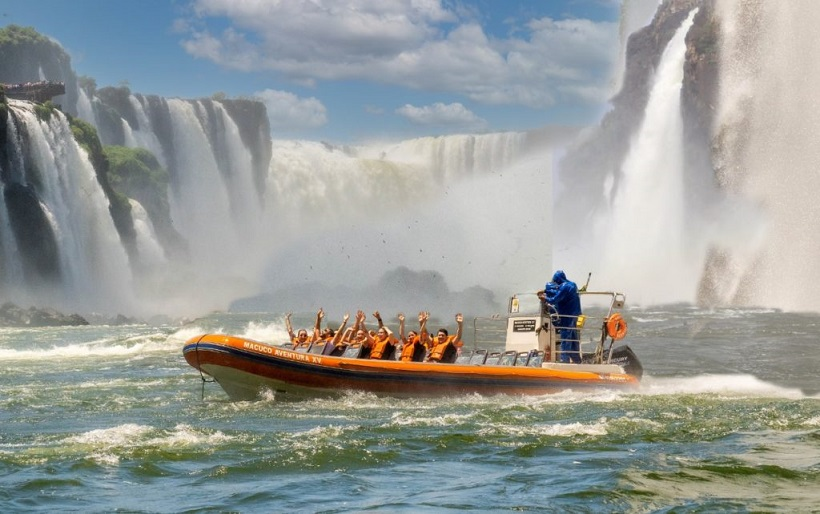
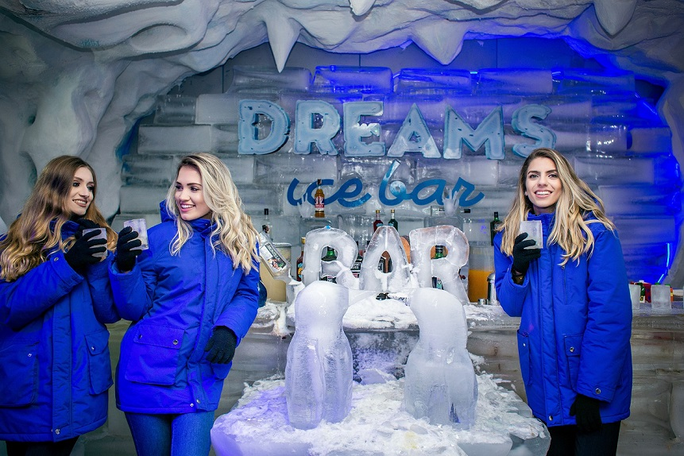
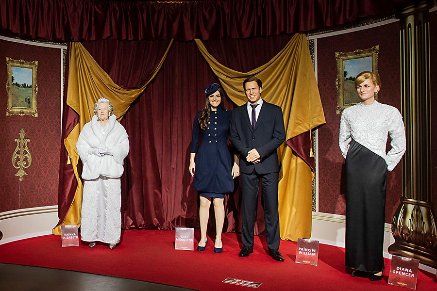
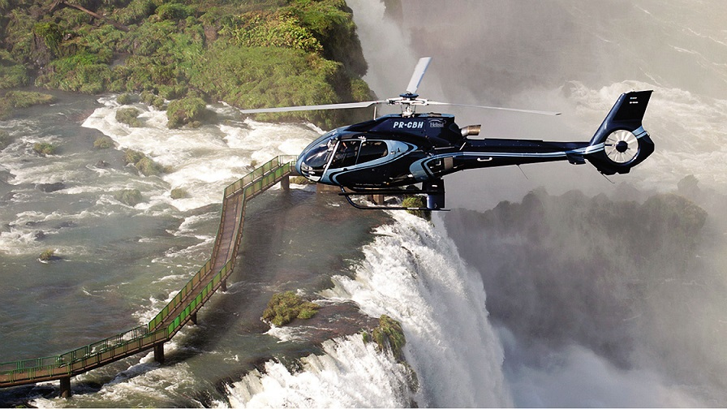
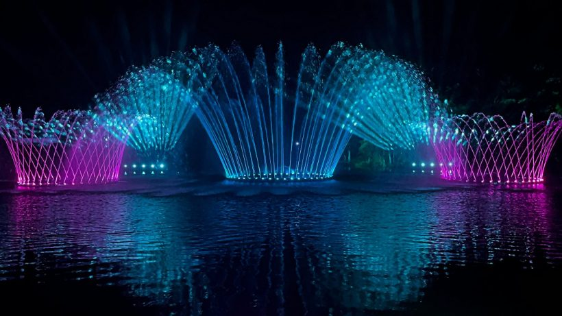

Considered the best tour in Foz do Iguaçu. A boat adventure with a lot of adrenaline through the rapids of the Iguaçu River, culminating in a real waterfall bath in the
Waterfalls of Iguaçu. The starting point of the tour is inside the Iguaçu National Park, which is one of the extra attractions offered to tourists visiting the Falls.
The total duration of the Macuco Safari is 2 hours, divided into three stages: The first part is a journey in an electric vehicle where a guide explains more about the fauna and flora of the
National park. The Macuco Safari tour in Foz do Iguaçu continues with a short walk along a 600m wooden trail until you reach the deck, where tourists receive
life vests to board the twin-engine boats that take you up the river, passing through the rapids to the Iguazu Falls. Next to the falls there is a parade
for photos and then finish with a beautiful shower at the Iguazu Falls.
Dreams ice bar - Dreams park show

A freezing adventure in the land of the Falls!
The high temperatures in Foz do Iguaçu are about to drop with the opening of Dreams Ice Bar, the largest ice bar in the world, with more than 300 m². In addition to the feeling of being inside
an ice cave, minus 11ºC, you will be amazed by the furniture and decoration. They are made from crystalline ice and include beautiful carvings.
Visitors will find a bar, sofas, dolphins and penguins, all carved in ice. However, the decoration can be renewed at any time,
since attractive bought a machine to make his own sculptures. The Bar will open daily from 8am to 11pm. Cocktails will be served for adults, while for children,
iced chocolate. And both adults and children will receive special clothes so they can have fun on the dance floor in peace.
Wax Museum - Dreams park show

The Wax Museum in Foz do Iguaçu is an opportunity for you to immerse yourself in fantasy. There are more than 90 life-size personalities. Among them: Elvis Presley, Tom Cruise, Amy Winehouse, Mister Bean, Frank Sinatra, Will Smith, Michael Jackson, Santos Dumont, Albert Einstein, Pope Francis, Pope John Paul II, and many others. There's even a whole Star Wars scenario! All of them produced in London. The museum also stands out for its interior decoration. The attraction is part of the acclaimed entertainment complex Dreams Park Show located in several tourist cities in the country.
Helicopter flight over the falls

An alternative to further explore all the details of the Falls is to observe them from above. There are helicopter rides that leave from the Iguaçu National Park, usually with high values for a few minutes of flight. It's not that cheap, but certainly satisfaction with the landscape is guaranteed.
Wonder Water Show

was inaugurated on December 2, 2022 and created in honor of the region that is home to the Iguaçu Falls, the Paraná River, the Guarani Aquifer and also important urban rivers,
like Monjolo and M'Boicy. Therefore, it has water as its main element.
According to Wonder Park, the show is unprecedented in Brazil and the attraction is inspired by sources from tourist cities around the world. In addition, the soundtrack of the presentation has a contribution
by the musician Allen Lima, from the Lima Family.
From the technical details, the fountain has a central jet that reaches almost 30 meters in height, in addition to central and lateral circles and another arch in the background, with water jets and lighting. led. Despite being a permanent attraction at Wonder Park Foz, in December and mid-January the fountain gets an extra show for the Christmas program